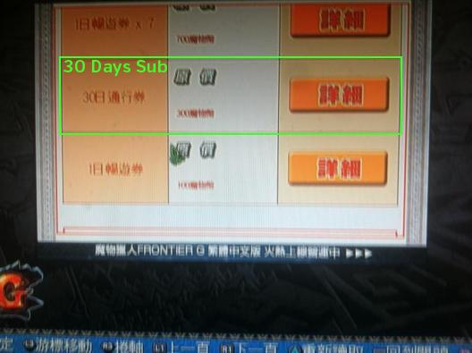

Subscribing for PS3 and Vita is largely similar to the PC process, with the main difference being that you use MH coins purchased from the PlayStation Network store and use the in game browser instead of going to the actual capcom website on a PC.
Before Starting
Make sure you are playong on a PSN account set to Taiwan, Singapore, Hong Kong or Malaysia. Despite the game launching on other region accounts you will that you cannot actually subscribe unless you have an asian region account. If you've started on a US region account for example you can never sub due to the coins simply not being available for purchase and will need to start again on a proper region PSN account.
Step 1
You will need to purchase funds for your PSN account, for this you can use PlayAsia or OffGamers to buy a digital code for the specific PSN region you are using. The Taiwan, Singapore, Hong Kong and Malaysia regions all work with MH Frontier G TW you will however need to buy the correct code for your specific account (i.e. if you make a Taiwanese region account, you have to buy TW PSN codes).
Step 2
After going through any necessary verification processes you will be emailed a code or a notice that you can find the code on the site. Redeem this code on your TW PSN account and buy any desired coins, 300 Coins are required for each 30 days of subscription. Subscriptions do not auto-renew and you will need to buy more every 30 days. Buying more than 30 days adds to total duration, for example buying 30 days 3 times would result in a 90 day subscription period.
Step 3
Now that you have your MH coins, you'll need to boot up Frontier and go through menus as normal until you get to the screen resembling a web browser with cats on the side. There are four tabs at the top of the screen, you want to click on the one furthest to the left. From here you'll be taken to a screen with multiple pictures on it, you want to click the second one in the left column, which is a hunter girl with white hair.
Step 4
You'll be brought to a page full of various options in chinese. At this point you want to scroll down to the bottom of the page until you find an option titled (30日通行券) and click on the icon to the right of it. This should be priced at 300 Coins. Don't simply buy based on price, there may be other things that cost 300.

Step 5
You will be brought to a screen detailing the product you selected. After verifying that you have chosen the 30 day subscription, click the button on the right again to check out.
Step 6
You will be asked to login. Do so.
Step 7
After you will be brought to a screen detailing the transaction, it should say your MH coin total in red lettering in the top right as well as showing the amount you will have left after the transaction in the text below. You want to scroll to the bottom and click the checkbox at the bottom, and then choose the top of the two blue buttons below the check box. After the blue will change to a yellow box, signifying your transaction is being processed. After a few seconds you will be brought to a receipt page confirming the success of your purchase and showing your remaining MH coins (if any). If you receive an error simply try again and it should go through.
Step 8
At this point all you need to do to activate your subscription is relog and it should activate. Your subscription end date can be viewed on the second page of your guild card. If you find yourself not subbed the best thing to do is to verify that your purchase went through and if so, simply relog into the game until it takes effect.
There's a few potential issues that may pop up during this process, the first is obviously if you didn't read properly and are trying to do this on a PSN account that is not from the South East Asia region. The only solution for this is to simply create a new account and start over. If the game doesn't exist on the PSN store you can not buy MH Coins and as such you cannot sub.
A second issue is that coins can simply take a while to appear, try waiting a couple hours to see if they pop up. You may also be able to use the main MHF TW website instead of the in game browser to carry out purchases and ensure the transactions have gone through.
In game there is also a shop, you can access this by choosing the second to last option in the standard menu. This should always see the coin value associated with your account even if the web versions do not. This can be slightly worse to navigate so be careful to choose the right things, especially if they are pricey.